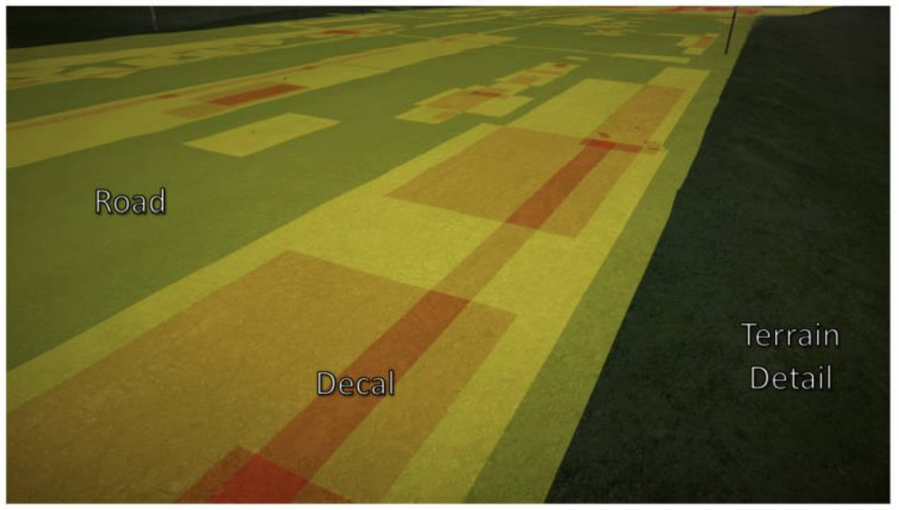
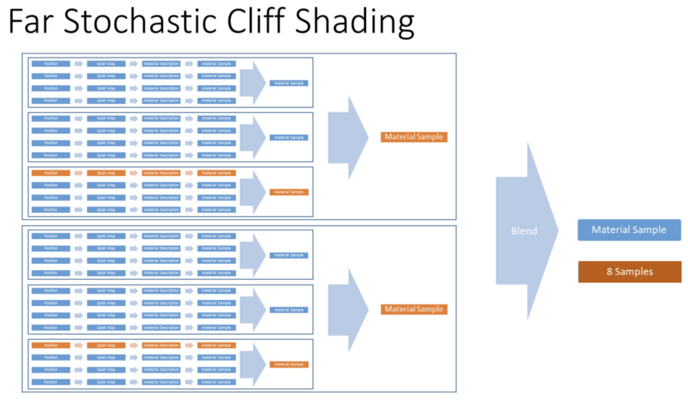

TerrainRenderingInFarCry5
TerrainRenderingInFarCry5 note.
<!– more –>
Terrain Rendering in Far Cry 5
Heightfield Rendering Basics
TerrainRenderingInFarCry5
绘制地形一小片区域的一个简单的，GPU 友好的方法会使用如下几个步骤：
a. 渲染一个 grid
b. 在 vertex 着色器中利用高度图来移动每个顶点
c. 在 pixel 着色器中利用 albedo 贴图来赋予地形基础颜色
d. 在 pixel 着色器中利用 normal 贴图来计算光照
Terrain Quad Tree
在 FarCry 中我们 terrain tiles 的最大尺寸是 64 平方米，我们将一个 tile 称为一个 sector，整个世界有 160*160 个 sector。FarCry5 的世界大小为 10km*10km(64*160=10240)。我们按照 0.5 米的分辨率来编辑地形信息。
我们无法渲染你在这里看到的数以千计的高分辨率 tile，所以我们需要有一个 LOD 系统。为了支持这一点，地形数据被存储在一个四叉树结构中。在根部，世界被划分为一组 2km*2km 的 tiles，这些 tiles 始终都会在内存中，不会被释放。
我们会将每个 2km*2km 的 tile 划分很多更小的 tiles，将这些 tiles 组织为一个层级结构的四叉树。这些 Tile 按照 LOD 以及与玩家的距离进行 Steaming，磁盘上存储的 Tiles 数量有上万，但是实际上运行时加载进内存的 Tiles 数量大概在 500 左右。
我们的世界由上万个这样的四叉树节点组成。每个四叉树节点会携带如下数据：
a. Heightmap (贴图格式 R16_UNORM, 129*129)
b. 世界空间的法线贴图 (我们假定了 z 为正，将 smoothness 和 specular occlusion 也打包到了贴图中，贴图格式 BC3, 132*132)
c. Albedo map (贴图格式 BC1, 132*132，我们使用 1 位 alpha，alpha 值为 0 表示地形上的洞)
当然，我们还存储了一些其他贴图，后面会看到…
当我们加载一个四叉树节点时，会同步将这些贴图加载到一个 atlases 中。这样只要知道该节点在这些 atlases 中的位置，我们就可以引用到该节点对应的贴图资源。
Terrain Rendering
从磁盘读取数据到将地形显示到屏幕的过程，我们执行了很多步操作。
首先，我们需要流式载入数据。
然后，在每帧的 update 阶段都执行遍历四叉树的操作。
其次，每个 view 的渲染阶段，在提交 terrain patches 组给 render 之前，执行 culling，batching。
下面对每个阶段做简要介绍。
Stream Quad Tree
我们的流式加载策略为：
首先，加载玩家周围一圈四叉树节点，这些节点是最高级 LOD (lod0)
其次，加载玩家周围更大范围的一圈四叉树节点，这些节点的 LOD 等级比前面低一级 (lod1)
以此类推，直到最后我们将最低等级 LOD 的所有节点都载入，并且保持最低等级 LOD 的节点（lod2）一直在内存中。
在下图和后面的图示中，为了简化，只使用了 3 级 LODs，但是在 FarCry5 中，我们实际使用了 6 级 Lod。
上图最后一张图，显示了所有我们请求加载的节点（不同 lod 的节点有重叠）。但是我们无法假设哪些节点已经被加载完成，一些加载请求可能在等待中。因此，实际加载的状态和请求加载的状态可以不同。对于任何情况，我们都需要能够正确渲染。
Traverse Quad Tree
我们真正渲染的节点是哪些？
我们会从四叉树的根节点开始向下遍历，如果一个节点满足下面两个调节，就将该节点进行分解(不再渲染该节点，只渲染它的子节点)：
- 该节点的所有子节点都加载完成
- 我们想要增加该节点的 lod
使用如上简单规则，我们可以得到一组覆盖整个世界的节点，且这些节点互相不重叠。如下图所示:
Cull Nodes To View
另外，我们只需要渲染摄像机可见的节点。下面右图展示了摄像机剔除后剩下的节点：
Batch into Shading Groups
最后，如果我们使用不同的 shaders，我们更希望将我们的节点打包为多个 shading groups。例如：我们可能会为近处和远处的 terrain 使用不同的 shaders。
在同一个 shading group 中的所有节点，都可以被发送到一个 batch 中来进行渲染（即使他们属于不同的 Lods）。如下图所示：
CPU Terrain Implementation
一开始，我们地形系统的大部分都运行在 CPU，只有最终的渲染(下图红色部分)使用 GPU。
GPU Terrain Implementation
最后，我们意识到，应该将大部分工作移动到 GPU，CPU 只需要处理开始的流式加载逻辑。如下图所示：
Motivation for GPU Approach
将工作移动到 GPU 有以下好处：
- 地形数据只被 GPU 使用
- 移动到 GPU 后，减少了 CPU 消耗
- 同时减少了 GPU 消耗。在 GPU 可以使用可用数据改进 LOD 选择和剔除（减少了 vertex shading 开销，地形系统的 vertex shading 很容易成为性能瓶颈）。从而改进了 GPU terrain 的性能。
- 更多 Terrain 信息在 GPU 数据结构中，有利于其他 shaders 访问这些数据。
注意：我们有一份分开的 CPU 数据结构，用于 gameplay terrain 高度和材质的查询。
GPU Data Structures
我们需要一些 GPU 上的数据结构来存储和处理我们的四叉树。这些结构的布局方式需要适合 GPU 并行算法高效访问和改变(transformed).我们主要讨论如下 4 个主要的数据结构，以及我们如何对他们进行读写。
Terrain Quad Tree
Terrain Quad Tree 使用两个链接在一起的 GPU 对象来实现。
第一个 GPU 对象是 mip-mapped 贴图：Mip0 有 160*160 个贴图图元。6层四叉树，每一层对应一个等级的 mipmap 贴图。贴图中的一个贴图图元代表四叉树中的一个节点。
贴图中存储一个 16 位的索引(mip-mapped 贴图的格式为 R16_UINT)，其可以索引到第二个 GPU 对象。
第二个 GPU 对象是 Node Description Buffer: Node Description Buffer 是一个简单的数组。其记录了我们加载完成的节点的一些信息，如：最小和最大 terrain 高度，节点的贴图在贴图 atlases 中的位置。节点数据被打包为两个 uints. 我们在 CPU 端保存了一份节点数据的 shadow copy，用于跟踪节点的分配。
每当我们加载一个节点后，我们都会将该节点对应的描述信息加载到 NodeDescriptionBuffer 中一个可用的 slot。我们会在每帧都执行一个 compute shader，用于在 NodeDescriptionBuffer 中添加或删除节点(对应于节点流式载入和卸载)描述信息。
注意，mip-mapped 贴图中有两个特殊值，其意义如下：
- 0xffff 表示空值，意味着该四叉树节点未被加载
- 0xfffe 表示不可用值，意味着其不对应任何四叉树节点
这些特殊值，保证我们可以正确地遍历四叉树（遍历时可正确忽略不可用的节点）。
Terrain Node List
Terrain Node List 是一个简单的节点列表，其表示我们潜在的可以进行渲染的节点列表（执行任何可见性测试之前的节点列表）。每一帧通过遍历四叉树结构（前一节提到的 Terrain Quad Tree）来计算出该列表。
我们使用一个 compute shader 来对 LOD 层级进行遍历，在每个阶段，一个 thread 处理当前 LOD 的每个节点，并且可能会将节点细分为多个子节点。下面会给出这个处理过程的细节。
首先，我们从最低级的 LOD(LOD2) 开始，用该 LOD 的所有节点的索引填充一个 temporary buffer A。
其次，我们希望这些节点细分为他们的子节点。我们读取 temporary buffer A，并且将会输出两个 buffer：一个 temporary buffer B 和一个最终结果 buffer Final。
对于 buffer A 中的每个节点，判断其能否被细分为多个子节点，如果可以，则将它的子节点添加到 buffer B，否则，将其添加到 buffer Final.
关于 LOD 标准：
在 Far Cry 中，我们会基于节点到一个或多个摄像机的距离来确定 LOD 标准。另外，我们还会考虑每个节点的 LOD bias，从而可以强制部分节点使用更高的细节。
在下一次 dispatch 时，compute shader 将会读取 temporary buffer B，执行相同的逻辑，将结果输出到 temporary buffer A，和 buffer Final。我们有 6 级 Lod，一共执行 6 次就可以得到最终的 Terrain Node List。
同时，我们还在 buffer 中存储了每个 LOD 中节点的个数。为每个 pass 使用 一个 compute shader dispatch，可以很优雅地完成该过程。然而，我们还是需要对每一个 pass 进行两次 dispatch，因为我们需要一个额外的 dispatch 来填充 indirect args buffer，以便传递数据给下一个 pass. 而且每次 dispatch 都涉及到一个小的同步开销。所以，在 Far Cry 中，为了将性能成本降到最低，我们在单个 dispatch 中处理所有的 passes，将中间数据存储在 LDS 中。我们之所以可以这样做，是因为我们有一个固定的节点数量上限，而且这个上限小于最大可用的 compute shader group 大小。
Terrain LOD Map
每帧我们都需要完全填充一个 8 位的贴图，每个贴图图元记录 Terrain 上每个 sector 对应的 LOD 级别。我们只需要这个信息来做一件事，那就是检测我们需要在哪儿缝合不同 LOD 的 patches。注意，当当前 patch 所相邻的 patch 的 LOD 更低时，我们才修改当前 patch 的顶点。所以，通过将空白区域填充为 0，我们有效地忽略了它们。
为了构建 LOD map，我们需要对前一步生成的 Terrain Node List 进行处理。对于每一个节点，我们将其对应的 LOD 等级填充到该节点覆盖的 sectors 中。
注意：
- 不要使用 NodeCount 个 threads 来填充 Terrain LOD Map。在最坏的情况下，每个 thread 需要写 32*32 次值。
- 应该使用 SectorCount 个 threads，并且从 Terrain Node List 中获取写入的值。每个 thread 只需要写入 1 次或 0 次值。
Visible Render Patch List
Visible Render Patch List 是最终的数据结构。其为一个简单的 buffer，其包含一个 terrain patches 列表，对应于在单个 instanced draw call 调用中，我们希望实际渲染的内容。该 buffer 还伴随一个 IndirectArgs buffer 用于驱动 Draw Call。
patch 结构包含了 world position，size，以及 patch 所采样的贴图在 texture atlas 中的位置。
我们将 Terrain Node List 中的每个节点分为更小的 patches，并且剔除哪些我们不需要渲染的 patches。
每个节点被划分为 8*8 个 patches。每个 patch 会被渲染为一个 16*16 大小的 vertex grid。这样的划分非常好，因为一个 wavefront 中的 compute shader threads 刚好可以处理一个 patch。
对于每个 patch 我们执行如下操作：
- Frustum cull
- Occlusion buffer cull
- Back face cull
- Calculate and pack LOD transitions into patch data
GPU Culling
culling 步骤使用了类似于 GPU pipeline 为任意 meshes 执行 culling 的方式。这种方式在 Siggraph 2015 年在 GPU-Driven Rendering Pipelines 分享中被首次提出。
Occlusion Buffer Culling
我们使用了降分辨率的保守深度缓冲区来剔除 terrain geometry.
在 console 平台，我们使用了 GPU 最佳的 occluder pass 来填充 depth buffer 并且提取 HTile.
在 PC 上，我们有一个软件光栅化的 occlusion buffer，我们已经使用它来做 CPU 端可见性检测，我们将其上传到一个纹理。
然后，我们会为 occlusion buffer 生成 mipmap，这样我们就可以在多个不同的物体尺寸上进行深度比较了。
在 culling pass 阶段，我们执行如下操作：
- 获取 terrain patch 的 bounding volume
- 确定投影到屏幕后的屏幕范围
- 在 mip 层级中，查找 1 个或多个覆盖该屏幕范围的样本
- 测试并进行保守剔除
Back Face Culling
背面剔除需要进行 offline 处理。
在 offline 步骤中，我们为 patch 的每个三角形生成世界空间的 normals。然后，我们在球上找到一个最小的圆，该圆可以包含所有的 normals，可以将其可视化为一个圆锥。
一个 patch 对应的圆锥可以用一个 normal 向量和一个半角表示，将 normal 和 half angle 打包到一个贴图图元中。一个节点有 8*8 个 patches, 存储一个节点的圆锥信息需要 8*8 的贴图，贴图格式采用 BC3，两个颜色通道存储 normal，一个 alpha 通道存储半角。贴图存储方式会有精度问题，所以我们需要为保守测试留一些余地。
Real Time Collision Detection Ericson 论文描述了如何获得 normals 的最小 bounding sphere。
在运行时，我们采样该 patch cone 贴图，并和 camera 方向进行测试，以确定是否可以剔除该 patch。检测方法并非简单比较 dot(cameraDir, coneNormal)和 sin(coneAngle)，因为 cameraDir 在 patch 的不同地方是不同的。为了保守剔除，我们需要检测 cameraDir 和 patch 的 4 个角。
The Cone of Normals Technique for Fast Processing of Curved Patches 论文描述了如何检测 patch 是否背对 camera。
LOD Transitions
每个输出的 patch description 存储了一个 packed LOD 描述信息。
这个信息是当前 patch 四个方向上与相邻 Patch 的 LOD 差值。该信息为 16 位，每个方向 4 位。
在 culling pass 期间，通过采样每个 patch 周围的 LOD Map，可以得到 LOD 差值。在后续的 vertex shader 中会读取该数据来执行 mesh 缝合。
Timings (GPU Pipeline)
不包含 rendering 的情况下，GPU Pipeline 总的耗时每帧为 0.1ms。其中大部分可以在一帧的早期异步计算，使得其消耗几乎免费。
Vertex Shading
Optimal Grid Rendering Isn't Optimal 文章描述了 grid rendering 使用的 index buffer layouts。
LOD Mesh Stiching
当两个 patches 来自不同四叉树 LOD 层级，我们需要保证这两个 patches 的所有相邻顶点能够被缝合，以避免不同 patches 之间的接缝。
我们通过读取在剔除过程中创建的 LOD packed data 来知道一个 patch 是否连接到低 LOD 的 patch。在顶点着色器中，我们可以简单地将 patch 边缘的顶点变形到所需细分级别的最近的顶点。
在下图中，我们看到的是 LOD 相差 1 的情况，两个顶点一组，把第二个顶点直接移动到第一个顶点的位置。
在下图中，我们看到的是 LOD 相差 2 的情况，四个顶点一组，后三个顶点全部移动到第一个顶点的位置。
Terrain Holes
洞穴/掩体的开口周围需要有洞。在 albedo map atlas(BC1 格式)的 1 位 alpha 通道中，存储 terrain holes.
通过在 vertex shader 中将输出的 projectedPosition 设置为 NaN 来剔除地形的顶点。将输出的 projectedPosition 设置为 NaN 在 Graphics API 中没有明确的说明，但是所有 GPU 硬件似乎都支持。这种方式比其他方案（在 pixel shader 中使用 discard，或者为带有洞的 patches 使用特殊的几何）都要高效。
一个顶点被剔除后，所有关联的三角形都会被剔除。所以，剔除中心的顶点会剔除 8 个三角形，如下图所示：
这使得 hole 的分辨率只有 terrain 分辨率的一半。但对于我们的场景设计师来说，0.5 米的地形对应 1 米的洞是可以接受的。
Terrain Shading
我们的着色方式来自 2017 GDC 的分享： Ghost Recon Wildlands:Terrain Tools and Technology
前面提到过，每个四叉树节点都会携带一个 texture payload。下面详细列出所有的 textures：
a. Heightmap (贴图格式 R16_UNORM, 129*129)
b. 世界空间的法线贴图 (贴图格式 BC3, 132*132，我们假定了 z 为正，将 smoothness 和 specular occlusion 也打包到了贴图中)
c. Albedo map (贴图格式 BC1, 132*132，我们使用 1 位 alpha，alpha 值为 0 表示地形上的洞)
d. Color Modulation Map (贴图格式 BC1, 132*132)
e. Splat Map (贴图格式 BC3, 8*8)
f. Patch Cone Map (贴图格式 R8_UNORM, 65*65)
远处的着色，可以直接使用四叉树节点 texture payload 中的 albedo/normal.
近处的着色，我们需要使用 splat map。
Splat Map
splat map 是一个 8 位格式的贴图，我们将 terrain materials 绘制到其中。splat map 使用了包含 256 个材质的调色板(尽管，FarCry5 中，我们只有 150 个 terrain materials)。
一个材质包含多个索引，这些索引指向一组存储在 texture arrays 中的 detail textures。对于一组典型的 PBR 类型贴图, 我们有 3 个贴图数组，并且当贴图被 splat maps 引用时，才会被动态地流式载入。该材质还包含一组参数，用于定义 orientation/tiling/地形是否可以燃烧等等。
detail textures 的分辨率如下：
Albedo (BC1, 1024*1024)
Normal/Smoothness/Specular Occlusion (BC3, 1024*1024)
Height/ColorMask (BC1, 512*512)
注意，由于内存的限制，每种细节纹理一次只能载入 32 个（约 70MB 的内存）。这些地表材质的纹理会动态地被拼成 32 层的 Texture Array 加载进内存，然后再按照 Material Buffer 中保存的 Id 进行索引，所以这意味着一个地形节点最多使用 32 种地表材质。贴图的流式载入是由我们的 streaming dependency system 来处理的。世界创建团队必须小心管理每个生物群落的材质，以保持在 32 个纹理预算之内。
Terrain Foreground Rendering
当我们渲染一个地形像素时，我们执行如下操作：
- 获取像素在 tile 中的局部坐标
- 使用该局部坐标去查询 Splat Map，从而获得材质 ID
- 使用材质 ID 获得 material description（其中包含了要采样的 detail textures）
- 使用世界坐标和材质的 tiling、rotation 得到采样 detail texture 的 uv，并对 detail texture 进行采样
- 得到采样数据后进行着色
然而，我们的地形位置会映射到 splat map 的 4 个 texels 之间的某个点。所以我们需要读取的不是 1 个，而是周围 4 个材质样本。我们在 shader 中对 4 个结果进行混合，混合系数为基于材质高度修改后的双线性混合系数。
这意味着每个地形像素需要对 16 个纹理进行采样以计算出最终的材质结果。
Virtual Texturing
从前一节可以看到，一般的采样对于 splat map 来说是非常昂贵的。我们通过将结果 caching 到一个虚拟纹理中来节省一些性能。我们的 virtual texture system 在 GDC 2015 FarCry4 中有分享。
Virtual texturing 允许我们模拟有无限大的贴图覆盖整个地形。我们只需要存储这个无限大的贴图的一部分，该部分是当前需要采样的部分。缓存的贴图数据被以 pages 的形式存储在 Physical Texture 中。
当你想获得某个位置的 terrain material sample 时，我们首先在 PageTable texture 中查找一个对应的位置，该位置给出 Physical Texture 中采样的 page，然后，通过采样 Physical Texture 得到最终的结果。只需要 4 次贴图采样就可以得到某个位置的 terrain material sample。
Virtual Texture Page Rendering
- 使用我们的 SplatMap 来渲染缓存的 Texture Pages
- 每帧渲染 6 个 pages。1Page = 256*256 texels + 4 texel border
- 使用 compute shader 将 page 压缩为 BC 格式
- 2 * BC1(Albedo/Smoothness/Specular Occlusion)
- 1 * BC3(Normal Map)
- 2 * BC1(Albedo/Smoothness/Specular Occlusion)
- 在渲染下一个 page 时，利用 async compute 压缩刚渲染好的 page
- 总的 GPU 消耗为 1ms 每帧
Virtual Texturing CPU Read back
我们需要跟踪哪些 texture pages 需要被更新。因此，渲染 terrain 时，我们还会将请求的 pages 写入一个有界的 UAV。然后，我们将该 UAV 读回到 CPU 来确定接下来优先渲染哪些 pages。(UAV is unordered access view)
UAV 的大小为完整 render target 大小的 1/8，从而保证 CPU 读回消耗比较低。我们在 64 帧内，对屏幕空间样本位置进行 jitter，从而保证经过 64 帧后，我们收集到所有的 page IDs。
Virtual Texturing
由于我们使用了虚拟纹理，我们可以用很少的额外成本合成多层的道路和贴花。
你可以在下图中看到实际的视觉效果: 在地形细节纹理渲染的基础上，渲染了一个道路贴花。多个贴花又被渲染在道路贴花上面。
下图是贴花 overdraw 的可视化，我们几乎是免费获得的这种效果。

Cliff Shading
到目前为止，所有 terrain 贴图采样使用的 UV 坐标，都是从世界坐标推导而来的。因此，我们将这种方式称为 top down 或 z projection（FarCry 引擎 z 坐标轴向上）。这意味着在斜率陡峭的地方，texel 分辨率会变得很低。下图中，我们将这些区域标为红色：
将高光移除后我们就可以在崖壁处看到该问题，崖壁处贴图很模糊。
Cliff Projection
经典的解决方法是使用 triplanar mapping。按照世界法线和世界坐标轴的夹角来混合世界坐标的 3 个投影。使用 tri-planar mapping，我们需要执行完整的 splat map 计算 3 次，这需要进行 48 次贴图采样。
我们可以使用 virtual texture 代替 z projection 来减少一些采样，但是消耗依然很高。
Cliff Tiling
在启用 triplanar mapping 的情况下，还有另一个问题，悬崖可以在离玩家很远的地方看到，这使的 texture tiling 变得很明显。
如果我们使用一个固定的值作为我们的 texture tiling scale，并针对近处的地形进行调整，得到如下结果：
我们更希望 uv 空间在屏幕空间内更加恒定。这样可以得到如下结果：
现在画面显得更加合理了，地形和悬崖的纹理可以展示出分形，并且在多个尺度上效果都很不错。
但是，基于距离修改 tiling 会导致贴图的不连续。我们需要混合两种不同的缩放结果。再叠加上 triplanar mapping 的消耗，我们现在需要执行 96 次贴图采样!
Cheaper Alternatives
我们探索了如下一系列更便宜的方案：
- 为 cliffs 使用不同的着色模型
- 会导致一致性问题。
- 会导致一致性问题。
- 使用几何来代替基于高度图的 cliff，几何中预先烘培好 uv
- 我们在某些地方使用了这个方案
- 但是内存预算和产品成本是个问题
- 我们在某些地方使用了这个方案
- 根据 projection 分解地形网格
- Ghost Recon Wildlands 使用了该方案
- Ghost Recon Wildlands 使用了该方案
我们的解决方案是，生成一个 virtual texture atlas 来容纳 cliffs。
Stochastic Cliff Shading
一个略显疯狂的想法是使用随机的方法来混合我们不同的 shading inputs。如下图中，展示了对黑和白进行混合。图上使用了标准的 alpha 混合，图下使用了随机混合。 随机的结果在每个像素上都是不正确的，但 "平均"来看是正确的。
对于地形渲染，对于每个像素我们不再对多个 splat map 采样做混合，我们只需要选择一个 splat map 进行采样。按照随机的方式为每个像素从输入列表中选择一个 splat map 进行采样。我们只需要按照混合因子来对随机选择进行加权，从而可以更多地选择权重大的样本。
我们实验了以上方案，但是效果不够好，噪声很严重，而且不稳定。
What Noise Function to Use?
噪声函数为每个像素提供随机值，改进噪声函数可以改进结果。我们想要一个好的噪声函数。
Screen space noise 在摄像机运动下不稳定
World space noise 是稳定的，但是有锯齿(aliased)
Hashed Alpha Testing 论文中提到的噪声满足稳定性，并且噪声分辨率是像素级别（没有锯齿）。
采用新的噪声函数后，结果噪声还是很严重。最终我们采用了混合使用随机 blending 和 alpha blending。
Far Stochastic Cliff Shading
先考虑 cliff 距离摄像机比较远的情况。我们对两个 tiling scales 进行 alpha blend，但是每个 tiling scale 是一个基于 4 材质 3 projections(triplanar mapping) 的单个随机采样。这使得总的贴图采样次数减少为 8。

下图展示了使用 Far Stochastic Cliff Shading 渲染得到的结果，左图中为每个方向的投影使用不同的颜色( 如果我们不近距离看，这些颜色看上去是 blend 在一起的，但是放大之后可以看出，其实是 noisy pattern)。右图中是正常渲染结果, 因为我们的颜色数据有很低的对比度，所以我们不会察觉到噪声。
Near Stochastic Cliff Shading
再考虑 cliff 距离摄像机比较近的情况。我们不再需要第二个 tiling scale 样本，但是使用 stochastic triplanar blend 得到的结果噪声太明显。因此我们为 3 次 projections 使用 stochastic sample，然后，对结果进行 alpha blend。这使得总的贴图采样次数减少为 12。
Stochastic Cliff Shading Problems
通常来说我们不会看到该方案的问题，但是该方案不是完美的。我们看到这种技术的任何噪音都集中在材质变化的区域。如果我们真的放大检查一个高对比度的纹理过渡（如从岩石过渡到悬崖边上的草），我们就会看到噪声。如下图：
在《Far Cry 5》中，艺术家们可以控制该技术的使用范围，并且可以避免最坏的情况。
Beyond the Heightfield
在这一节，我们将介绍如何使用艺术家创建的几何或程序化生成的几何来扩展高度场几何(heightfield geometry)。
Terrain Displacement Decals
在《Far Cry 5》中，我们用 Terrain Displacement Decals 扩展了我们的 virtual texture decal system。Terrain Displacement Decals 是普通的贴花，会被渲染到虚拟纹理中。但它们也有一个匹配的简单 mesh，我们将用它来给地形定形。
mesh 会被放置到 terrain 上与匹配的 decal 相对齐。然后，pixel shader 会采样 terrain virutal texture，其中包含了该 decal。如此得到的结果就可以无缝地混合到地形上(因为 decal 已经通过 alpha blend 到 virtual texture 中了)。
在 Far Cry 5 中，我们随处都使用该技术，用于石头装饰、轮胎痕迹等等。下图展示了 Displacement Mesh 开启和关闭的对比：
Displacement Mesh 关闭时，我们也可以看到石头和树根，这些 decal 已经被渲染到 virtual texture 中了。Displacement Mesh 开启时，这些物体会显得更立体(树根比较明显)。
这种方法是对 terrain tessellation displacement mapping 的一种替代。我们也实现了 terrain tessellation displacement mapping 方法，但由于成本问题而没有采用。
使用 Terrain Displacement Decals 代替 terrain tessellation displacement mapping 的优缺点
优点(Pros)：
- 非常廉价（无需 tessellation shader 和 minimal vertices）
- 所有 mesh 可以使用一个共享材质，从而可以 batching 在一起渲染
- 可以方便地调整 mesh LOD 和位置以满足性能和画质要求
缺点(Cons):
- 需要人力摆放 (但是，我们使用程序化方法来放置)
Cliff Geometry
Far Cry 5 添加了一个程序化生成 cliff 的管线，其会将独特的 cliff 几何添加到场景中。cliff pipeline 检测出 cliff 区域，然后在这些区域创建 mesh。
Cliff Geometry 添加了形状和变化性，减少了一些 "height map" 感觉。下图是 Cliff Geometry 开启和关闭的对比：
这些独特的几何只有顶点位置和法线数据，因此非常的轻量。最关键的是，我们可以完全按照地形高度图的方式对 cliff 几何体进行着色。所以我们使用相同的着色器/地形纹理等。这意味着我们可以保证高度图和悬崖网格之间的 shading 是一致的。
Screen Space Shading
我们使用了 5 种主要的 shading 方式：
- Virtual texture shading
- Far atlas shading
- Near cliff
- Far cliff
- full triplanar splat map rendering (有些地方没有采用任何优化方式进行渲染)
我们需要在这些方式之间进行 blend，这导致我们的 shader 变体(shader variantions)数量达到 31。其中一些变体要比其他变体消耗高很多，为了不超出我们的 GPU 预算，我们需要确保在地形的任何给定部分，我们总是使用最便宜的 shader 变体（我们用 "Shader ID" 来表示 shader 变体）。
Select Shader ID By Patch
最简单方法是为 patch 选择优化的 Shader ID。在 culling pass 中，我们确定使用哪个 Shader ID 并将每个 patch 添加到对应 Shader ID 的 bucket 中。该方法基本是免费的，但是，其并非总是最优的，当 patch 足够大时，该 patch 内会有很大变化。另外这种方法只适用于我们的高度图几何（heightmap geometry）。如果我们还想将地形着色器用于程序化的悬崖几何，那么我们也要为该几何体优化着色器选择。

也可以使用 compute shader 来分析每个 patch，并为每个 Shader ID 生成单独的三角形列表。这与 Ghost Recon 在 2017 年 GDC 上分享的方法很接近。
Select Shader ID In Screen Space
另一种方案是，按照屏幕空间的 tile 来选择 Shader ID。这允许我们严格限制 expensive shaders 的边界，如下图中对比所示。这种方法还适用于程序化生成的崖壁几何。但是，这也意味着我们需要在屏幕空间进行 shading，我们恰好是这样做的。
Terrain Geometry Pass
首先，执行一个 terrain geometry pass, 其会渲染地形 depth 和 stencil 以及一个类别 RT（classification render target）.
8 位 classification RT 包含每个像素的 最优 ShaderID，其为 5 种渲染方式的位掩码。下图中，我为不同类别(classification)分配了不同颜色，使的更容易区分。
Terrain Classification Pass
然后，我们执行一个全屏的 Classification Pass，该 pass 使用 compute shader 实现。在这个阶段，会读取 classification buffer，并且按照屏幕 tile，执行 Shader ID 的异或操作，从而得到 tile 对应的 combined Shader ID。最终，为每种 shader variation 输出一个 tiles 列表，以及一个 IndirectArgs，用于驱动下一步的 pass。
我们发现 tile 的大小选 8*8 是最优的。我们可以读取 stencil 来拒绝不包含 terrain 的 tiles，所以我们不需要 clear classification RT。
在 console 平台上，我们可以使用 swizzles 来执行 Shader ID 的异或操作，将 tile 加入列表时，可以使用 ballot 来减少内部加锁操作。
Terrain G-Buffer Pass
最后，我们为每个 Shader ID 提交一个 tiled 的像素着色器 draw call。该 pass 会读取 stencil 来拒绝不包含 terrain 的 pixels，然后会读取 depth 并将 terrain 渲染到 G-Buffer.

下图展示了这 3 个 Pass 的数据流程：
Sampling Terrain Textures
我们如何得到屏幕上每个像素对应的 terrain material data?
首先，我们从 depth buffer 得到像素对应的世界坐标。
其次，Terrain Quad Tree 包含我们所要的一切数据。但是，为每个 pixel 遍历一次 Terrain Quad Tree 不够优化。我们需要建立从 world sector 到 terrain data 的映射。
Terrain Sector Data
Terrain Sector Data 就是我们需要的数据，利用该数据能够为场景中任何一个点从正确的四叉树纹理中采样。每一帧都会利用 TerrainQuadTree 来构建 Terrain Sector Data，构建工作和其他 GPU Pipeline 工作并行执行。
Terrain Sector Data 是一个 uint2 的线性缓冲区，而不是一个纹理（尽管图中将其显示为纹理）。对于每个 sector，我们会为每个加载的 LOD 存储四叉树节点的 atlas texture ids（若 LOD 没被加载，则设置为 0）。每个 LOD 占用 10 位，打包为 64 位。
Shading Pass Derivatives
在最后的 Pass 中，如何获得 texture derivatives？
Terrain 是比较特殊的，我们的所有贴图 uv 都是一个关于世界坐标的线性函数，所以 uv derivatives 是多个位置导数(position derivatives)。
我们已经知道世界坐标(从 depth buffer 重建世界坐标), 也知道世界空间法线(从 terrain atlas textures 获得)，为了获得(x,y)像素所对应的地形上一个点的世界空间导数(world space derivatives)，我们执行如下步骤：
- 从 depth 重建 world position
- 获得地形 world space normal
- 使用前两步得到的数据，构建一个平面，该平面和地形表面垂直
- 从摄像机发射射线，射线通过(x,y+1)像素，与前一步得到的平面相交，这样就可以求出 y 屏幕空间方向的世界空间位置导数。
- 从摄像机发射射线，射线通过(x+1,y)像素，与前一步得到的平面相交，这样就可以求出 x 屏幕空间方向的世界空间位置导数。
现在我们有了世界空间位置的 ddx 和 ddy，我们可以用它来创建所有的纹理空间导数。使用地形采样系统和这些导数，我们就可以为我们的地形着色了。
但是，这种方法只适用于 terrain heightmap。怎样才能统一处理 terrain heightmap 和 独有的 geometry(如：cliff geometry 等)？
在 Terrain Geometry Pass 中，将 normal 写入到额外的 RenderTarget，这样就可以统一处理 terrain heightmap 和 独有的 geometry 了。但是，插值后的 shading normal 和真实的三角形几何(triangle geometry)无法匹配。我们可以将三角形 normal 也写入到一个额外的 RenderTarget 中，利用八面体编码，每个 normal 使用两个通道来进行存储。
这样存储三角形法线可以被认为是 ddx/ddy 的压缩格式（6个浮点->2 个浮点）。当然，这依赖于深度缓冲区和投影矩阵中的其他可用信息。
Screen Space Shading Second Attempt
下图展示了 Screen Space Shading 最终方案 和 开始方案的对比：
最终方案中的 RGBA8 target 包含如下信息：
- 2 个通道用于世界空间的几何法线 （八面体编码）
- 2 个通道用于世界空间的三角形法线 (八面体编码)
然后我们像以前一样进行处理，但我们在 G-Buffer Pass 中读取新的 target，并推导出世界空间导数和着色法线。
- Screen Space Shading 优缺点
Pros：
- 可以处理所有类型的 terrain meshes
- Geometry Pass 对于所有类型的 terrain meshes 都很快
- 在 shading pass 可以进行优化 shader 选择(Optimal shader selection)
- 减少了 因缺乏 terrain patch 排序而导致的 overdraw 消耗
Cons：
- 需要分开 geometry, classification, 和 shading passes
- 利用带宽读写中间 RT(intermediate render target)
总的来说，在《Far Cry 5》上我们看到使用屏幕空间着色的性能更好。能够统一处理所有类型的地形几何，并对所有东西进行同样的优化。
- 可以处理所有类型的 terrain meshes
- Timings (Shading)
通常地形渲染一帧的消耗大概为 1.5-2ms。当有很多额外的网格几何时（这些 mesh 不会经过 heightmap culling pass），Geometry Pass 消耗会最大。当屏幕上都是我们比较昂贵的着色技术时，shading pass 消耗会最大。
Terrain Based Effects
利用 Terrain Sector Data，在场景中任何一点，我们可以在任何 shader 中访问如下数据：
- terrain height
- terrain albedo/normal/smoothness 等等
- terrain material (splat map 的 materail ID)
Terrain With Trees
在树干顶点着色器中对地形高度图进行采样，使的我们能够将树根与地形相融合。它为我们的森林区域提供了自然的变化，但不需要为适应地形而增加成本来生成多个资产。下图为开启和关闭 Terrain Blend 的效果对比：
Terrain With Rock Clutter
我们可以将同样的技术应用于我们生物群落的其他元素。例如，一些岩石杂物群。把这些资产建成大群的岩石和碎石是比较高效的，但这可能会使的与地形的整合变得困难。
通常情况下，我们可以简单地确定一个岩石群的方向，尝试将岩石群与地形相匹配，但是，如果地形是凹凸不平的，那么岩石就不能很好地匹配地形了。利用我们的地形采样，我们可以 blend 岩石顶点与地形高度。我们还可以与地形颜色混合，以帮助岩石更好地嵌入到场景中。下图为开启和关闭 Terrain Blend 的效果对比（用紫色突出岩石）：
Terrain Grass
我们还使用地形数据来帮助渲染草的最后一级 LOD。在摄像机附近，我们需要渲染高细节的草。而最后一级 LOD（下图中用紫红色标记）只需要使用更简单的四边形来渲染草，草需要和地形的高度和颜色相匹配。
每一帧都会使用一个 compute shader 来放置草的实例，该着色器会对地形材质类型、高度、颜色和法线进行采样。然后生成一个包含草实例列表的 buffer，使用单个 indirect draw call 就可以快速渲染这些草实例。下图为开启和关闭草的最后一级 LOD 的效果对比：
参考资料
- Terrain Rendering in Far Cry 5 GDC 2018 en https://www.gdcvault.com/play/1025480/Terrain-Rendering-in-Far-Cry
- Terrain Rendering in Far Cry 5 GDC 2018 cn https://www.kindem.xyz/post/52/
- Real Time Collision Detection Ericson
- The Cone of Normals Technique for Fast Processing of Curved Patches
- Optimal Grid Rendering Isn't Optimal
- Ghost Recon Wildlands:Terrain Tools and Technology GDC 2017
- Hashed Alpha Testing
- A Survey of Efficient Representations for Independent Unit Vectors
- Adaptive Virtual Texturing in Far Cry 4 GDC 2015
- Real Time Collision Detection